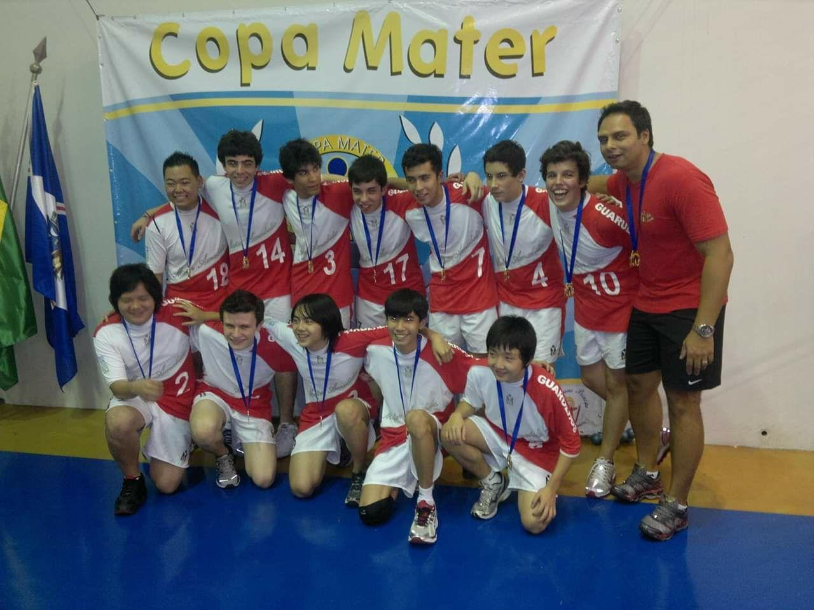

Hobbies
Resourcing to Wikipedia I got that:
"A hobby is an activity, interest, enthusiasm, or pastime that is undertaken for pleasure or relaxation, done during one's own time".
As I said before, I'm always looking for things to do and learn. So through my life I passed through many and many hobbies, some that lasted less than a week. So, obviously, I'll talk just about the ones more important to me starting for those that I'm doing for a longer time.
Videogames

I started playing videogames since I was a kid in a Mega Drive(aka Sega Genesis). And since then the feeling of challenging yourself, knowing a new world and seeing a beautiful story never changed. Through videogames I learned English, I sharpen my logic, improved my reflexes, they made me a better person. And I know they will continue to do.
Volleyball

Volleyball is the sport that I most love. You have your space to do your best, but you can only touch the ball once. At the same time that it calls for individual performance, it isn't playable without teamwork. I played since 2012, but this year I stopped because of my academic schedule, but I'll soon start to play again.
Digital Arts

I developed this interest after entering the university. We were in need for artistis in the Academic Center so here I go looking for tutorials on the internet.
It is one of my favorite hobbies, but it is surely the hardest one! I'm not very good with spatial memory and not very coordinated too, but I looking forward to day the day I'll be!
In the My Arts page there are some arts that I've done if you're curious to see.
Linux

The Linux operational system is a major tool in the computing area, but I also consider it a hobby of mine.
I'm currently using the Manjaro OS and I love spending hours and hours customizing it and making it beautiful to me. Of course many of these hours it's also for fixing problems that linux always have, but I wouldn't change for any other system. For me freedom comes before stability!
Musical Instruments

Playing instruments is definitively the hobby that I'm worst at. I started playing Acoustic Guitar when I was around 12 years old, but I did just one year of classes. Then, three years later I started learning again through the internet and that's what I do till this day.
But Acoustic Guitar isn't the only one I tried to learn, I tried Piano, Flute (they teach us in school), Ukulele and Scale (all of this I borrowed from friends or my girlfriend). And my latest purchase that I'm really loving it is my Otamotone (the one from the picture)!